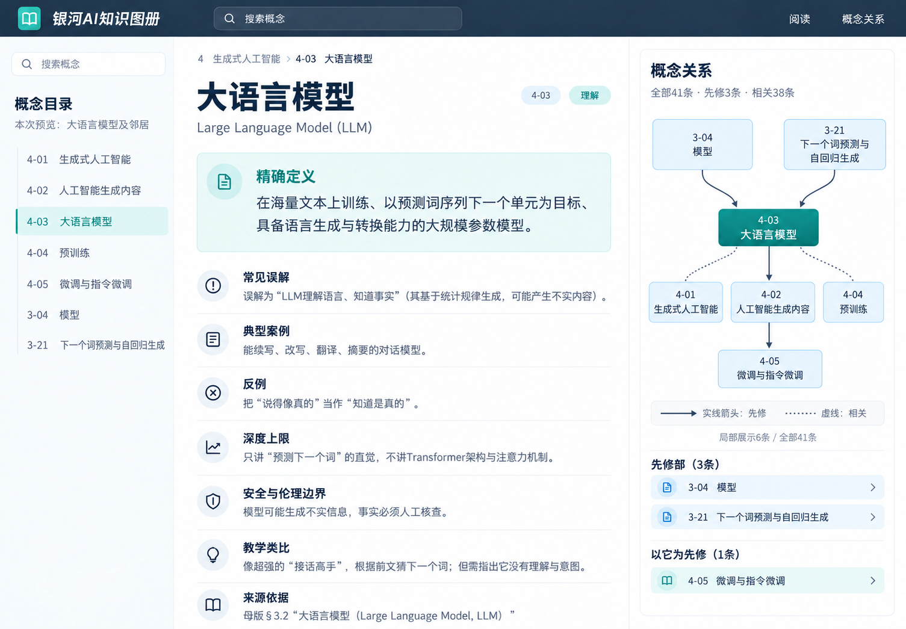
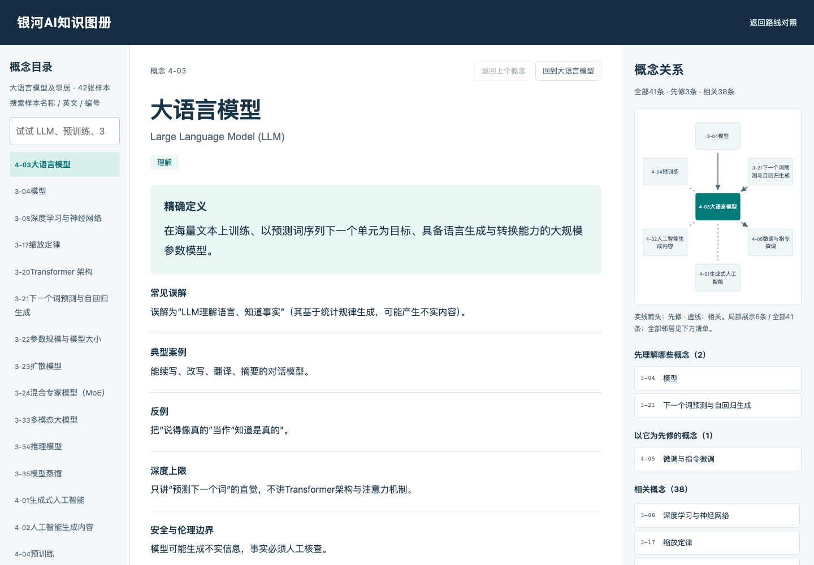

A · 视觉设计图先行内置 imagegen · 一张初稿＋一次修正放大查看设计图仅作视觉参考，关系语义未通过。 生成图仍错误画出“大语言模型→人工智能生成内容→微调”的先修链，并把“先理解”条数标成3（应2）。这些关系不能用于网页还原；若选此方向，实现时以冻结数据校正。
B · 直接 HTML 先行HTML / html-prototype · 真实卡文与邻接关系打开网页，试用交互可以搜索 LLM / 3-04，点击“模型”再返回，查看41条关系清单；窄屏自动转为纵向阅读布局。窄屏阅读截图 · 窄屏关系清单